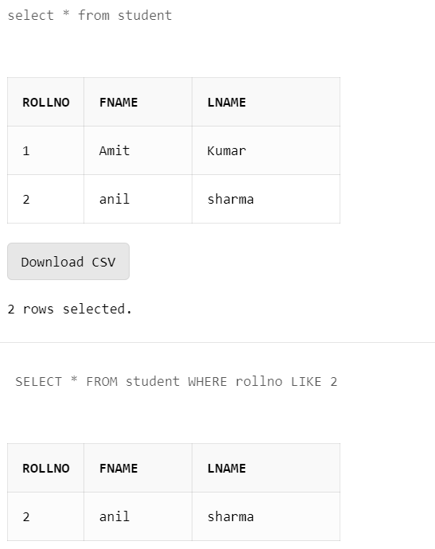

LIKE clause is used to perform the pattern matching task in SQL. A WHERE clause is generally preceded by a LIKE clause in an SQL query. LIKE clause searches for a match between the patterns in a query with the pattern in the values present in an SQL table. If the match is successful, then that particular value will be retrieved from the SQL table. LIKE clause can work with strings and numbers.
SELECT ColumnName1, ColumnName2
FROM TableName
WHERE ColumnName LIKE [Expression];
